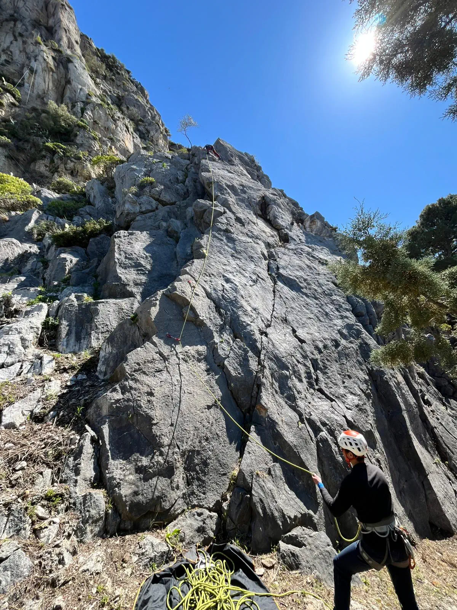

Cinque Pizzi
Si raggiunge salendo lungo la scalinata dopo la biglietteria e si scavalca la rete prima del cancello.

Kalura
Settore principale. Dietro il cimitero.

S. Calogero
Alla sinistra dell'ingresso del cimitero imboccare la strada che sale.